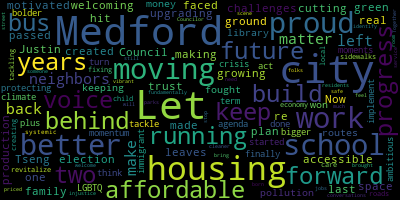

[Tseng]: I'm Justin Tseng. For the last two years, I've been proud to be your voice on the Medford City Council. Now, I'm running for re-election to keep Medford moving forward. Let's build a future that leaves no one behind. The challenges my family faced while I was growing up in Medford motivated me to hit the ground running. And in just two years, we've made real progress in making our city more affordable, accessible, and welcoming for all. We've created an affordable housing trust and passed a housing production plan. We're upgrading our green space and cutting pollution. I'm proud to have fought for and won more money for our schools and library, keeping bus routes in Medford, and protecting our immigrant and LGBTQ plus neighbors. Our city is finally moving again, but our work here isn't done. Let's turn these moments of progress into momentum for the future. Let's think bigger and act bolder to tackle the housing crisis. Let's implement the ambitious climate agenda we started this term and let's revitalize our local economy. From fixing our roads and sidewalks to creating more after-school child care and tackling systemic injustice. We have more work to do. We need someone in the room who will bring our conversations back to what fundamentally matters. How do we stop folks from being priced out and left behind? How do we make our city cleaner and our schools better? How can we make our residents, no matter where they were born or how they identify, feel safe and welcome in our city? As your Councilor, I'm proud to be that voice. Together, we've brought more housing, more jobs, a more vibrant scene, better parks, and better bus service back to Medford. But there's still so much left to do. Let's keep Medford moving forward. and build a city that works for you, me, and our neighbors down the street.
|
total time: 1.47 minutes total words: 317  |
|||
{kind=link}